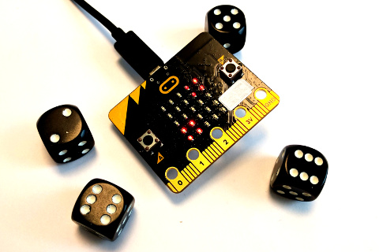
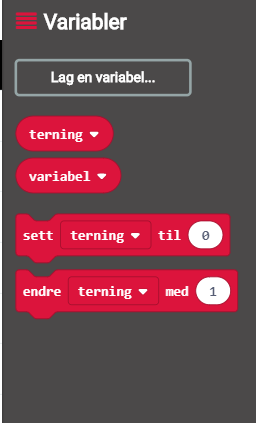

Kan micro:biten vår brukes som en terning? Ja, det er faktisk ganske enkelt!

Steg 1: Vi rister løs
Vi begynner med å vise et tall når vi rister på micro:biten.
Sjekkliste
Test prosjektet
Det er to forskjellige måter vi kan teste micro:bit-programmer på:
Siden vår kode skal reagere når man rister på micro:biten kan du simulere
dette ved å klikke på den hvite prikken til venstre for teksten SHAKE på
micro:bit-simulatoren. Tallet 1 skal vises på skjermen til
micro:bit-simulatoren.
Det lastes nå ned en fil som heter microbit-Uten-navn.hex til datamaskinen
din. Samtidig dukker det opp et vindu som sier at du må flytte denne filen
til MICROBIT-disken. Dersom du trenger hjelp til dette så spør en av
veilederne.
Steg 2: Tilfeldig terning
Terninger skal jo vise forskjellige tall, hvordan gjør vi det på en micro:bit?
Sjekkliste
Vi gir deg ikke hele svaret, du må prøve litt på egen hånd! Men nedenfor er to
tips om du står fast!
Steg 3: Terningen ruller
En terning lander jo ikke bare på en side, den ruller og viser mange sider før
den stopper.
Sjekkliste
For å gjøre en ting flere ganger bruker vi løkker. Hent klossen gjenta 4 ganger fra Løkker-kategorien. Legg den rundt vis tall-klossen på
denne måten:
Steg 4: Terningen husker
Hva om vi vil bruke terningresultatet senere? Da må vi huske hva vi kastet!
Sjekkliste
Klikk på Variabler-kategorien og deretter på knappen Lag en variabel. Gi
den nye variabelen navnet terning og klikk OK. Du vil se at det dukker
opp en kloss som heter terning i Variabler-kategorien.

Om du tester prosjektet ditt nå skal det oppføre seg helt likt som før! Men
denne endringen gir oss nye muligheter! Siden vi nå vet resultatet av
terningkastet kan vi for eksempel vise et smilefjes hver gang vi kaster en 6'er:
Prøv å pusle sammen klosser fra Logikk- og Variabler-kategoriene som
sier hvis terning = 6.
Steg 5: Mer avanserte terninger
Hva kan vi bruke terningene våre til? Prøv selv dine ideer!
Flere ideer
Du har nå lært hvordan micro:biten kan kaste terning. Men det finnes mange måter
dette kan utvikles videre på. Nedenfor er noen ideer, men finn gjerne på noe
helt eget!
Forbedre denne siden
Funnet en feil? Kunne noe vært bedre? Hvis ja, vennligst gi oss tilbakemelding ved å lage en sak på Github eller fiks feilen selv om du kan. Vi er takknemlige for enhver tilbakemelding!